X About A little about me I’m Max Wroblewsky, an IT professional based in Calgary, Alberta. My background includes technical support, networking, infrastructure, endpoint management, and cloud-related work.
X Projects Projects Work School Personal Endpoint Management Device Management and Microsoft Defender Microsoft 365 Administration Exchange, SharePoint, Entra ID, Azure, Purview, Security 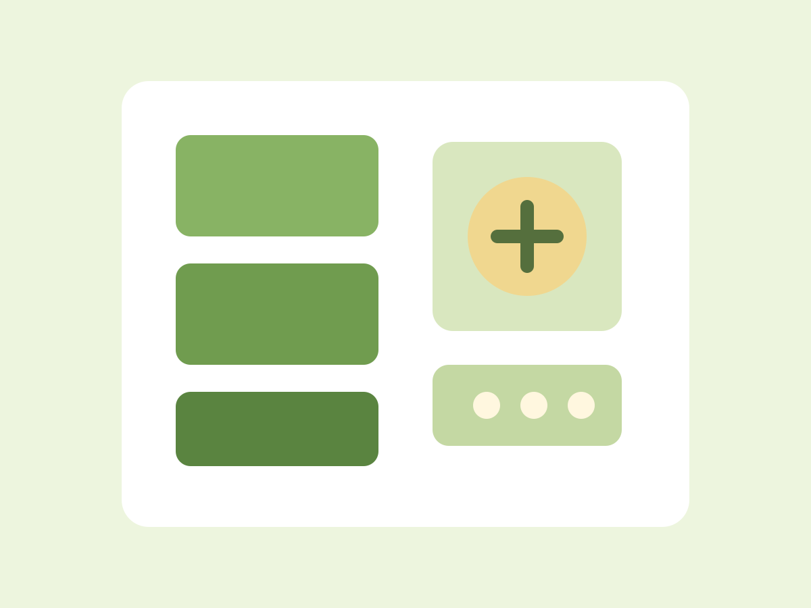 Windows Server Infrastructure Active Directory, Group Policy, file services, DNS, DHCP Endpoints and Workstations Windows 10 and 11, macOS, hardware support 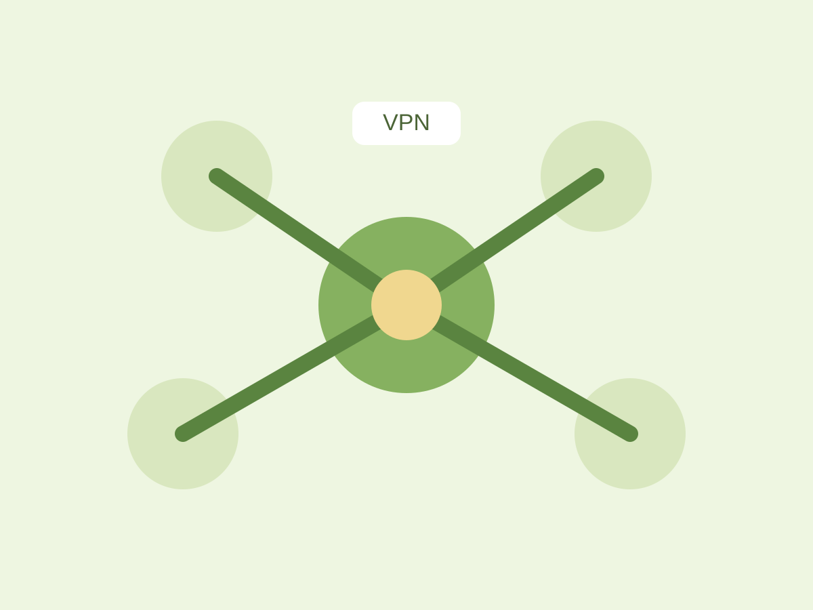 Core Network Services Routers, switches, firewalls, VPNs, DNS, DHCP Server Room Infrastructure Servers, UPS systems, modems, switches, firewalls, cable management 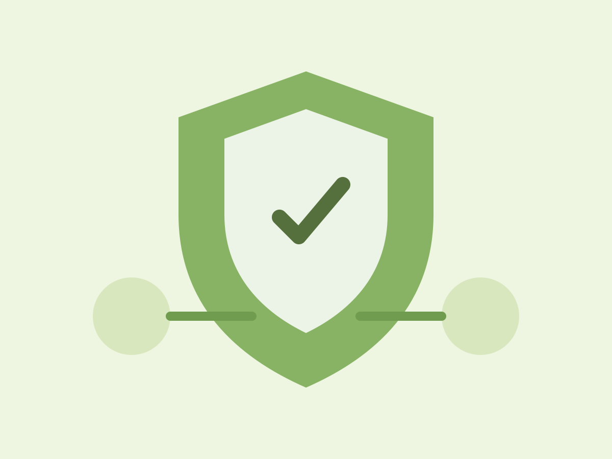 Cybersecurity Operations Microsoft 365 security, firewalls, network controls 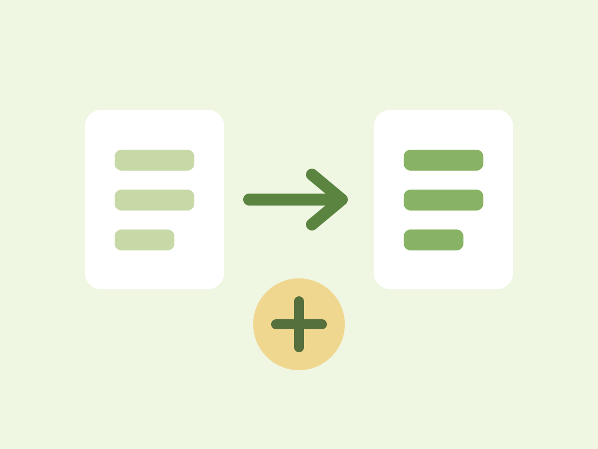 Migrations, Backups, and Support Data migration, backup workflows, infrastructure support 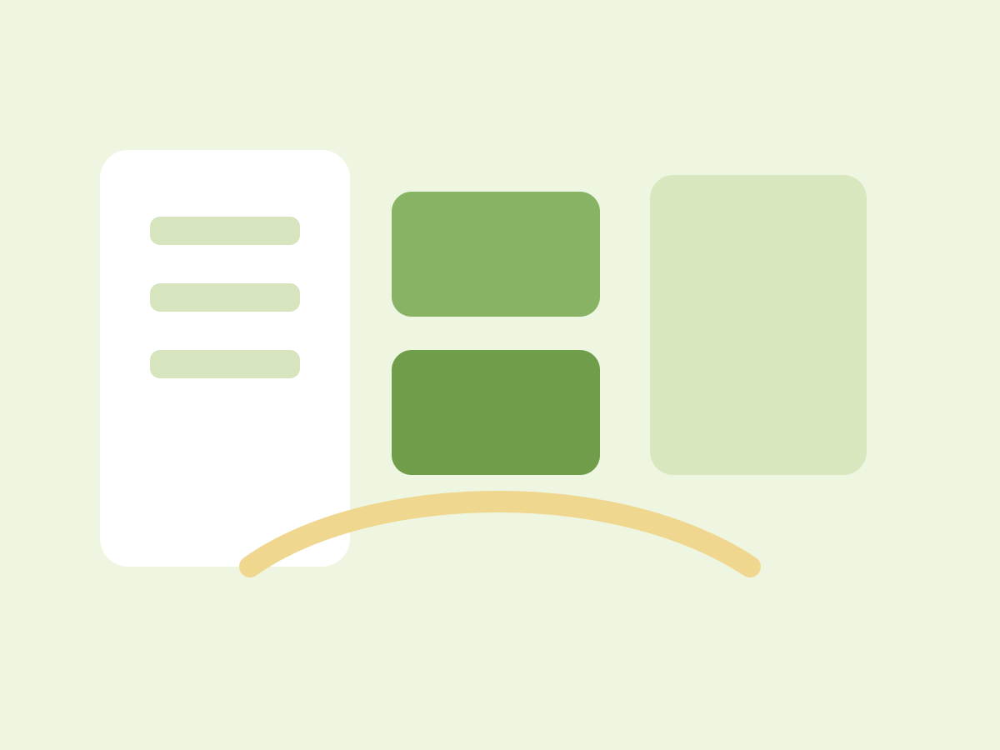 Infrastructure Rebuild Office environment and networking ServiceNow Service Desk ITIL and ticket workflows 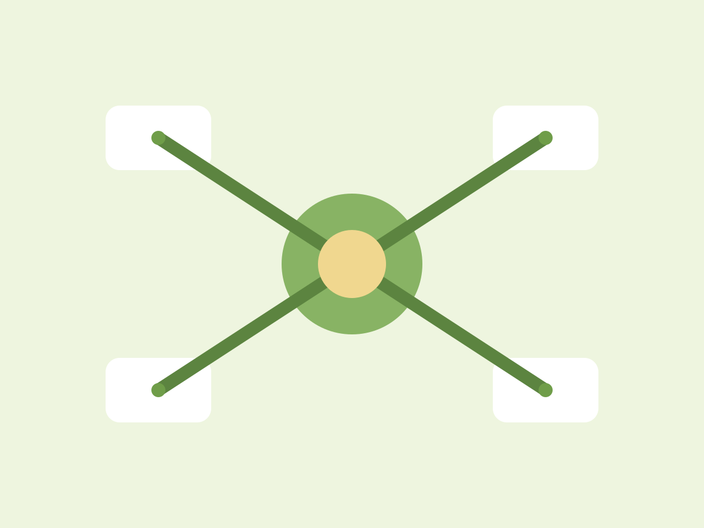 Enterprise Network Design Cisco and multi-site routing 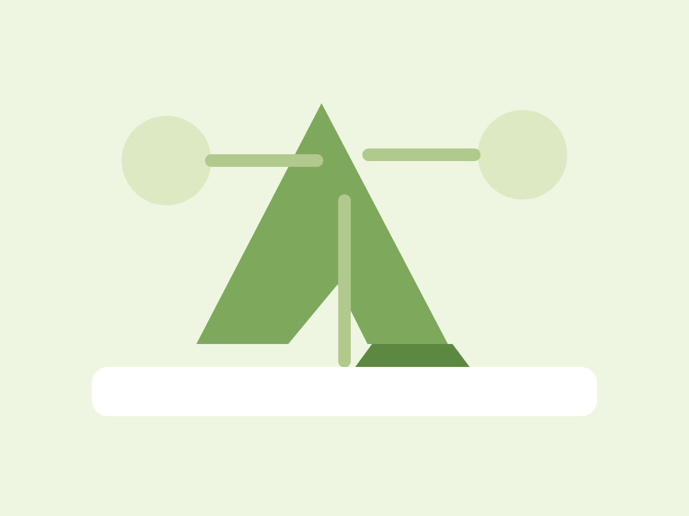 Cloud Transformation Azure and hybrid architecture 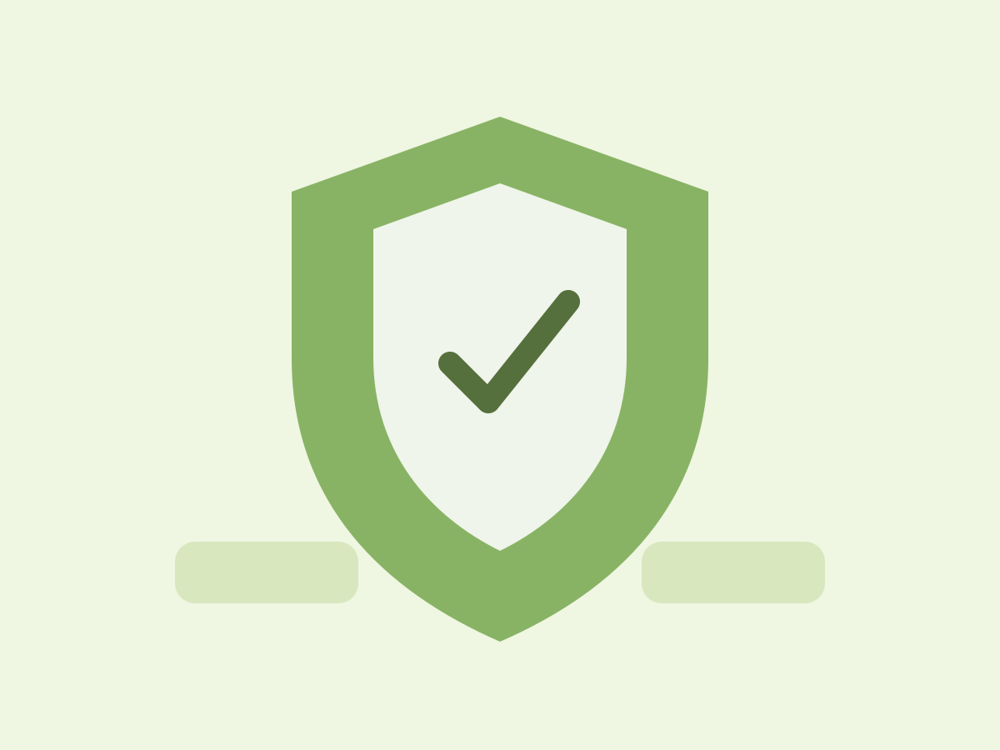 Network Security Design Palo Alto and threat intelligence 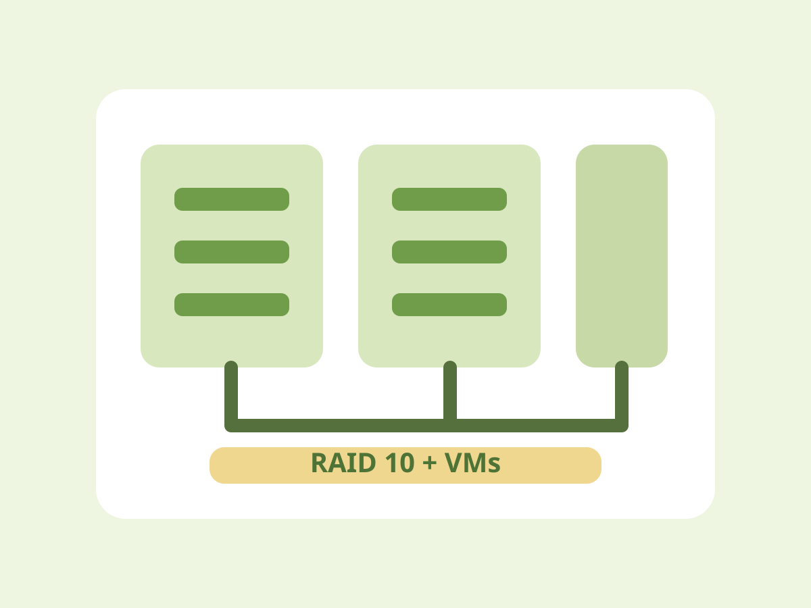 Proxmox Cluster RAID 10 and VM infrastructure Plex Media Server Remote streaming and automation Mail Server Mailcow, backups, and hardening 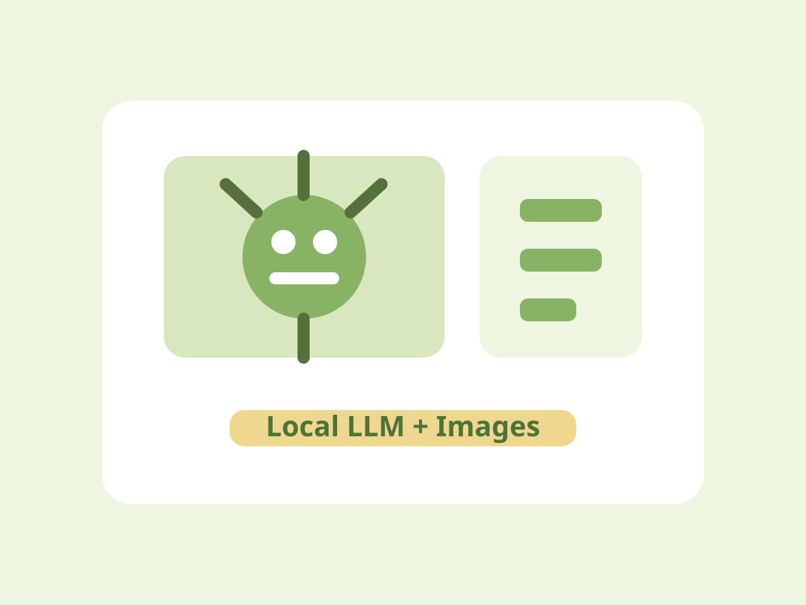 AI / LLM Local text and image generation 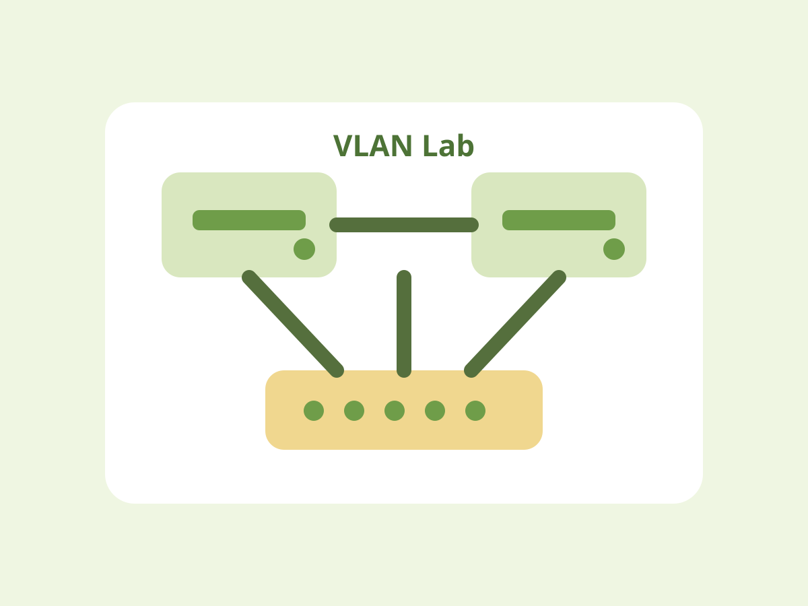 Cisco Lab VLANs, trunking, and ACLs